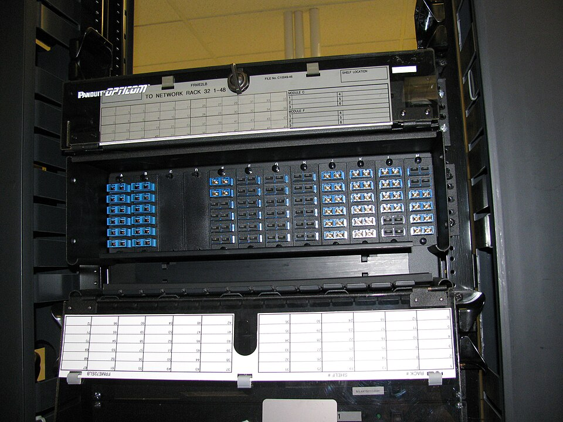
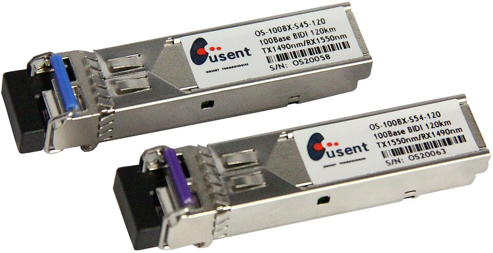

Patch and prove a duplex fibre cross-connect
Read a two-ended work order, trace transmit to receive and record the circuit you actually proved.
Identify both ends before touching a lead
A cross-connect is a documented link across a patching system, often between two customers or providers. A work order names both ends. On paper make the order LAB-XC-017 from A cabinet, panel 02, pair 05/06 to Z cabinet, panel 01, pair 11/12. Add labelled strands and the expected optical interface at each end. For the exercise use duplex LC and matching 1000BASE-SX equipment if you have it; the paper option needs only labels and two coloured strings.

Photo by Robert.Harker, resized with callouts. Original photo · CC BY-SA 3.0.


Photo by OUSENT, resized with callouts. Original photo · CC BY-SA 4.0.

Watch the inspect and clean sequence. Follow the close-up of the fibre end face and note when the technician reinspects. VIAVI on YouTube.
Watch a technician inspect the two end faces. With authorised equipment, trained technicians verify the fibres are dark and use a suitable video inspection probe. The manufacturer's examples show both the patch-cord plug and the mating interface. VIAVI inspection videos, especially episode 3 · Equinix Smart Hands tasks and work orders.
Map both strands and check the medium
Label the pair at both ends and draw arrows for A-Tx → Z-Rx and Z-Tx → A-Rx. Ask a partner to make one label disagree with the work order. Verify the physical identifier at the far end before selecting any port. Put the pair back in the expected position.
Check the manufacturer’s transceiver, wavelength, fibre type, connector polish, link length and receive range. The sample uses two matching SX modules and compatible multimode fibre. A matched single-fibre BiDi pair needs complementary wavelengths and a different order. Use the hardware guide to prove compatibility rather than relying on jacket colour.
For a real, owned training link, inspect and clean compatible ends on the bench with the sources off and a suitable inspection tool. Keep dust caps on until ready. Never look into a fibre, port or transceiver. Make all patch changes while the training optics are off. Once the patch is complete, power the devices and record negotiated mode and link status on both ends. As a separate check verify test traffic in both directions using P19. Use the paper readout below if you lack the hardware.
| Order check | Illustrative observations | Decision |
|---|---|---|
| Reference pair | A Rx −8 dBm · Z Rx −9 dBm · both interfaces up · test replies flow both ways | Compare both levels with the actual receive range. Save port names and service proof. |
| Both receivers dark on a lab pair | Both outputs documented as enabled; Tx/Rx path unverified | Check the strand map and seating on the isolated lab link. Compare known-good optics and patch path in turn. |
| Link lights on; test traffic fails | Both ends show optical receive; network configuration is uncertain | Move to service-layer checks such as the expected test VLAN or subnet. Keep the original optical readings. |
Save the A and Z panel, ports, optics, received levels if available, tests and rollback labels. Add the measurement instrument and reference if you used a calibrated source and meter. On a customer job confirm who can authorise changes and record results for the remote engineer. Fluke inspection and cleaning guide · C07 · Scope and registration.